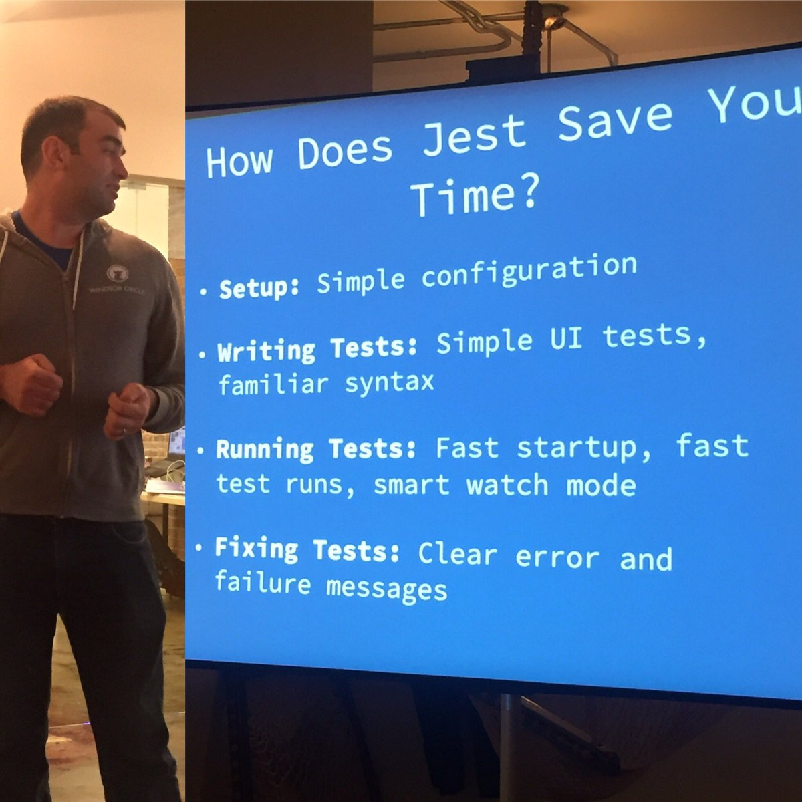

<!doctype html>
<html>
	<head>
		<meta charset="utf-8">
		<meta name="viewport" content="width=device-width, initial-scale=1.0, maximum-scale=1.0, user-scalable=no">

		<title>Jest and Puppeteer</title>

		<link rel="stylesheet" href="css/reveal.css">
		<link rel="stylesheet" href="css/theme/solarized.css">

		<!-- Theme used for syntax highlighting of code -->
		<link rel="stylesheet" href="lib/css/zenburn.css">
    <style>
      .reveal pre {
        box-shadow: none;
      }
      .reveal pre code {
        max-height: 600px;
      }
      .session-title {
        text-shadow: 1px 1px 2px black, 0 0 1em blue, 0 0 0.2em blue !important
      }
      .jest-logo {
        position: relative;
        left: 4rem;
        width: 30rem;
        border: none !important;
        box-shadow: none !important;
      }
    </style>

		<!-- Printing and PDF exports -->
		<script>
			var link = document.createElement( 'link' );
			link.rel = 'stylesheet';
			link.type = 'text/css';
			link.href = window.location.search.match( /print-pdf/gi ) ? 'css/print/pdf.css' : 'css/print/paper.css';
			document.getElementsByTagName( 'head' )[0].appendChild( link );
		</script>
	</head>
	<body>
		<div class="reveal">
			<div class="slides">
				<section data-markdown>
					<script type="text/template">
# Jest & Puppeteer

chun@tubi.tv
					</script>
				</section>
				<section>
          <section data-markdown>
            <script type="text/template">
## Jest

Delightful JavaScript Testing


            </script>
          </section>
          <section data-markdown>
            <script type="text/template">
## Why Jest

- "zero-configuration" experience
- Fast
- Snapshot Testing


BTW, React is tested by Jest too
            </script>
          </section>
          <section data-markdown>
            <script type="text/template">
## Zero-configuration

### Out of the box

Jest = Mocha + Expect + Sinon + Istanbul
            </script>
          </section>
          <section data-markdown>
            <script type="text/template">
## Fast
<br />

- Run tests in parallel across workers
- Optimal scheduling
- Only run change affected tests, Smart!

<br />
<br />
More details here [JavaScript Unit Testing Performance](https://facebook.github.io/jest/blog/2016/03/11/javascript-unit-testing-performance.html)
            </script>
          </section>
          <section data-markdown>
            <script type="text/template">
## Snapshot testing


<i>Demo</i>
            </script>
          </section>
          <section data-markdown>
            <script type="text/template">
## Matchers

<pre>
  <code class="js">
expect(1 + 2).toBe(3);
expect(!0).toBeTruthy();
expect(0).not.toBeUndefined();
expect(null).toBeNull();

// deep equal
expect({ name: 'tubi' }).toEqual({ name: 'tubi' });

// promise
expect(Promise.resolve('lemon')).resolves.toBe('lemon');
  </code>
</pre>

[Document](https://facebook.github.io/jest/docs/en/expect.html)
            </script>
          </section>
          <section data-markdown>
            <script type="text/template">
## Mocks

<pre>
  <code class="js">
// simple mock function
const mockFn = jest.fn();
mockFn();
expect(mockFn.mocks.calls).toHaveLength(2);

// mock return value
const filterTestFn = jest.fn()
  .mockReturnValueOnce(true)
  .mockReturnValueOnce(false);
const result = [11, 12].filter(filterTestFn); // [11]

// spy on existing method
const spiedPlay = jest.spyOn(FakePlayer.prototype, 'play');
  </code>
</pre>

[Document](https://facebook.github.io/jest/docs/en/mock-function-api.html)
            </script>
          </section>
          <section data-markdown>
            <script type="text/template">
## Timer Mocks

Control the passage of time

<pre>
  <code class="js">
// timerGame.js
function timerGame(callback) {
  setTimeout(() => {
    callback && callback();
  }, 1000);
}

// timerGame.spec.js

const callback = jest.fn();
timerGame(callback);

expect(callback).not.toBeCalled();
// Fast-forward until all timers have been executed
jest.advanceTimersByTime(1000);

expect(callback).toHaveBeenCalledTimes(1);
  </code>
</pre>

[Document](https://facebook.github.io/jest/docs/en/timer-mocks.html)
            </script>
          </section>
          <section data-markdown>
            <script type="text/template">
## How to start
<br />

- use [jest-codemods](https://github.com/skovhus/jest-codemods) to translate our current tests
- learn Jest
            </script>
          </section>
          <section data-markdown>
            <script type="text/template">
## Some Best Practices

- put test file aside of source file
- open jest watch mode in another tab
- use `test.only` to focus on current test case
- use timer mocks instead of waiting to save time
- use snapshot match for component tests to save time
- use enzyme `shallow` amap
            </script>
          </section>
          <section data-markdown>
            <script type="text/template">
## Summary


            </script>
          </section>
        </section>
        <section>
          <section data-markdown>
            <script type="text/template">
## Puppeteer

A Node library which provides a high-level API to control headless Chrome over the DevTools Protocol


            </script>
          </section>
          <section data-markdown>
            <script type="text/template">
## Headless Chrome


            </script>
          </section>
          <section data-markdown>
            <script type="text/template">
## End To End Testing (e2e)

> Most things that you can do manually in the browser can be done using Puppeteer!

<i>Demo</i>
            </script>
          </section>
          <section data-markdown>
            <script type="text/template">
## Pros & Cons

### Pros

- automatically test our core features like a blackbox

### Cons

- brittle, maybe broken by network/small modifications
- need run on a real local/staging/prod service
- need figure out how to query DOM
            </script>
          </section>
          <section data-markdown>
            <script type="text/template">
## Some Best Practices

- put e2e tests in the same directory
- before upgrading to Node v8, use `co` and generator to simulate async/await
- set a proper timeout
- run e2e tests automatically after every deployment
            </script>
          </section>
        </section>
        <section data-markdown>
          <script type="text/template">
## References

- [Jest Official Site](https://facebook.github.io/jest/)
- [Puppeteer Project](https://github.com/GoogleChrome/puppeteer)
          </script>
        </section>
        <section data-markdown>
          <script type="text/template">
## Thanks
          </script>
        </section>
			</div>
		</div>

		<script src="lib/js/head.min.js"></script>
		<script src="js/reveal.js"></script>

		<script>
			// More info about config & dependencies:
			// - https://github.com/hakimel/reveal.js#configuration
			// - https://github.com/hakimel/reveal.js#dependencies
			Reveal.initialize({
        controls: false,
        progress: true,
				dependencies: [
					{ src: 'plugin/markdown/marked.js' },
					{ src: 'plugin/markdown/markdown.js' },
					{ src: 'plugin/notes/notes.js', async: true },
					{ src: 'plugin/highlight/highlight.js', async: true, callback: function() { hljs.initHighlightingOnLoad(); } }
				]
			});
		</script>
	</body>
</html>
